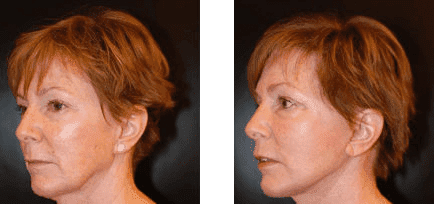

2 1/2 Dearfiled Dr. Ste. 102 Greenwich, CT 06831
Dr. Raskin grew up in Switzerland and earned her M.D. from the University of Geneva. After training in general surgery at New York University she studied ophthalmology at New York Eye and Ear Infirmary. She completed plastic surgery training at New York Presbyterian and a plastic surgery fellowship at the University of Pittsburgh Medical Center and an additional fellowship in oculoplastics at the University of Pennsylvania.
After practicing for five years in New York, Dr. Raskin relocated to Greenwich in 2006 and opened her current practice.
Learn More About Dr. RaskinBefore you make a decision regarding cosmetic surgery it is strongly suggested that you schedule a consultation with Dr. Raskin. Prior to your consultation, a welcoming staff member will request you fill out a questionnaire in order for our office to fully understand your goals, needs, and medical history.
During your consultation, Dr. Raskin will perform a comprehensive physical examination and discuss any health issues related to your procedure. At this time you will also have an opportunity to review before-and-after photographs of Dr. Raskin’s other patients, whom you may contact for further information.
Learn More About Our PracticeIf you are considering plastic surgery, Dr. Raskin will meet with you for a comprehensive consultation. During this appointment, she will complete a comprehensive physical examination, discuss any pertinent health issues, and review photos of past patients so you know what to expect from your procedure.
 View Real Patient Gallery